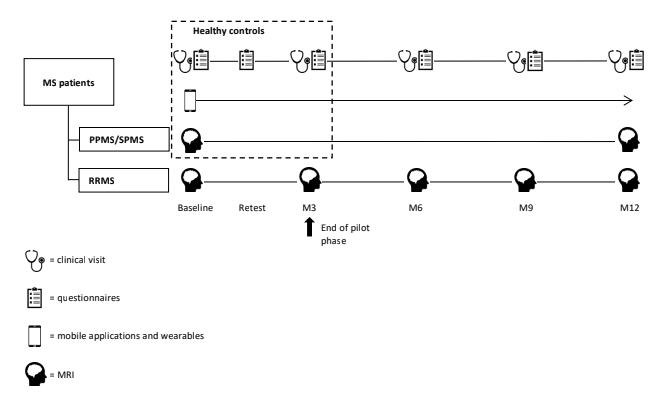
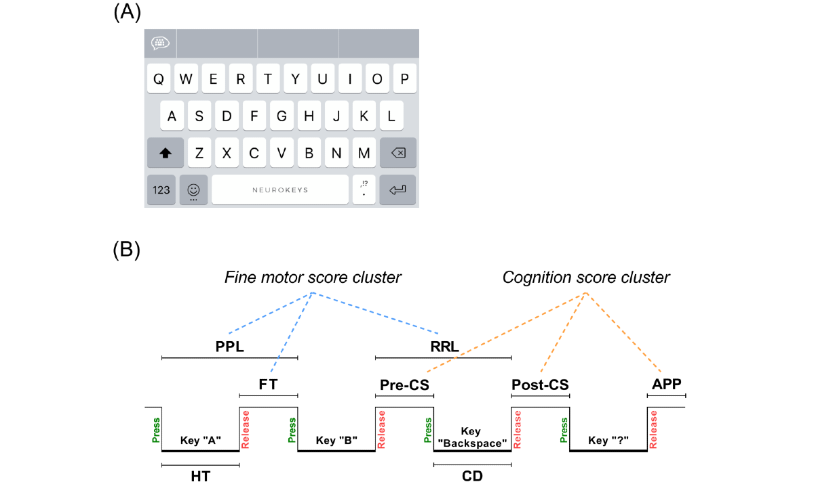

Estimating manual dexterity and cognition in users with multiple sclerosis in a longitudinal study
By James Twose
Lam, K. H., Twose, J., Lissenberg-Witte, B., Licitra, G., Meijer, K., Uitdehaag, B., ... & Killestein, J. (2022). The Use of Smartphone Keystroke Dynamics to Passively Monitor Upper Limb and Cognitive Function in Multiple Sclerosis: Longitudinal Analysis. Journal of Medical Internet Research, 24 (11), e37614.
Problem Statement and Innovation
Goal
-
Estimate and explain cognition and manual dexterity on a group level in the Amsterdam UMC Multiple Sclerosis (MS) project using smart phone interactions in a real world setting
Challenges
-
Relatively small sample sizes
-
Outcome measures collected at larger intervals than smartphone interactions
-
Nested/ hierarchical data due to longitudinal design
Innovation
-
One of the first to use smartphone interactions to estimate symptoms in MS
-
Explainable machine learning using medical data
Study design
Sample sizes: PPMS=11, SPMS=28, RRMS=51, Total=90
How are the features created?
Overview of the Neurokeys keyboard (A) and a schematic representation of the keystroke dynamics features and clusters (B). APP: after-punctuation pause; CD: correction duration; FT: flight time; HT: hold time; post-CS: postcorrection slowing; PPL: press-press latency; pre-CS: precorrection slowing; RRL: release-release latency.
What does our data look like?
fine motor score cluster vs NHPT coloured by age.
cognition score cluster vs SDMT coloured by age.
Results - intercepts, features vs outcome measures
fine motor score cluster vs NHPT with group level and individual level intercepts.
cognition score cluster vs SDMT with group level and individual level intercepts.
Coefficients, CI's and explanation
NHPT
β (95% CI) P value Fine motor score cluster 12.62 (9.61-15.63) <.001 Fine motor score cluster and covariates 12.56 (8.96-16.16) <.001 - An increase of 1 second in fine motor score cluster is associated with an increase of 12.62 seconds in NHPT performance.
- The longer it takes a user to type a message the worse their manual dexterity.
-
SDMT
β (95% CI) P value Cognition score cluster –8.57 (–12.02 to –5.12) <.001 Cognition score cluster and covariates –5.02 (–9.02 to –1.02) <.001 - An increase of 1 second in the cognition score cluster is associated with a decrease of 8.57 points in SDMT score.
- The longer it takes a user to think about their corrections and punctuation usage the worse their cognition.
What does this mean for us?
-
We are able to estimate and explain the relationship between clinical outcomes and the smartphone interactions of users with MS
-
The results hold even when including covariates in the model
Currently the model assumes that the relationship between the feature and the outcome is linear (on a group and individual user level)
Method is generalisable (as long as the outcome measure is continuous)
So what's next?
Attempt non-linear hierarchical models to see if they fit (and generalize) better
Follow up with the current population to see if the model continues to hold over a longer time period
Replicate the approach in different outcome measures and in other datasets (consider different disorders)
Appendix 1
SDMT fitted vs predicted values in training and hold out set.